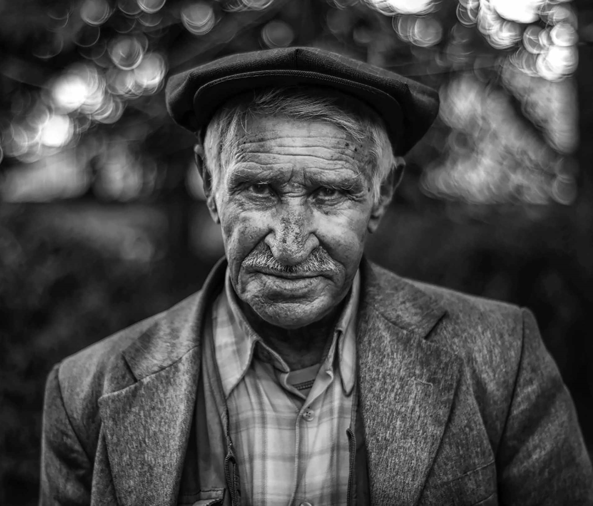
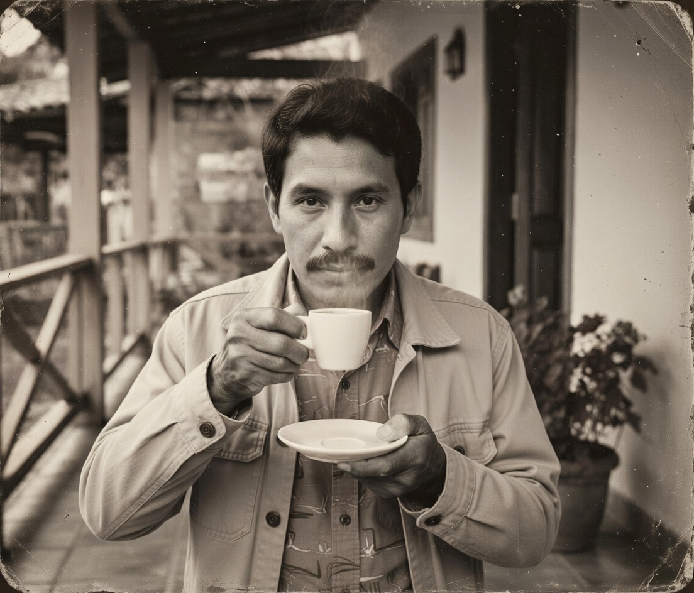
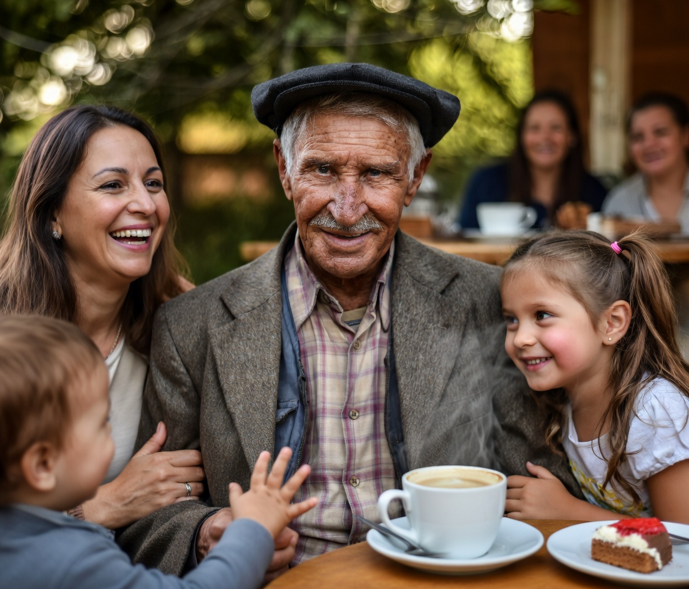
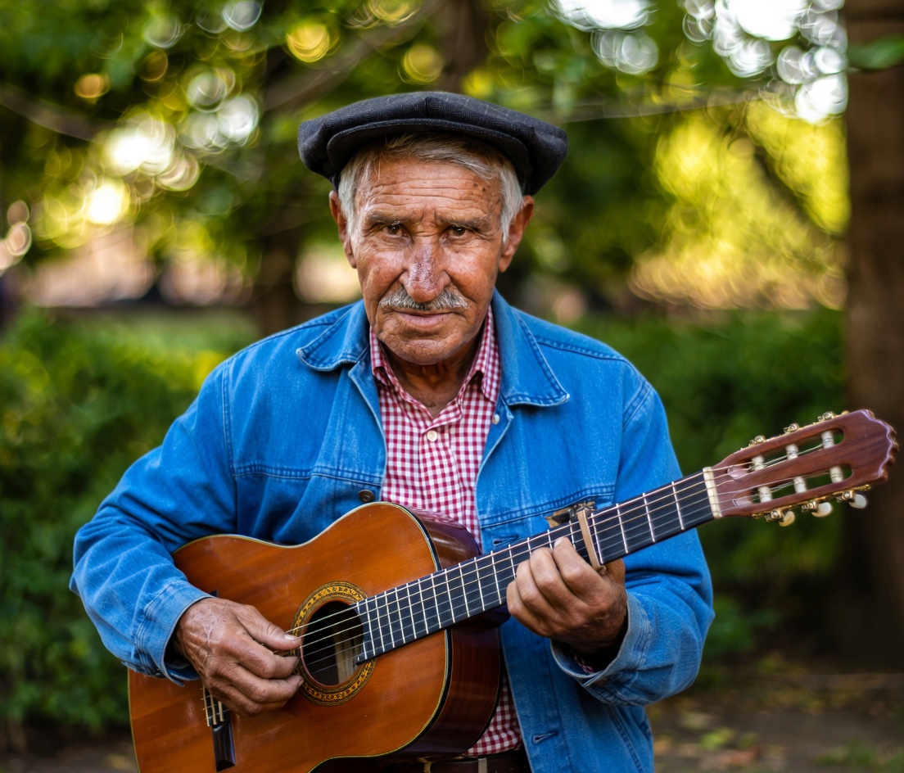
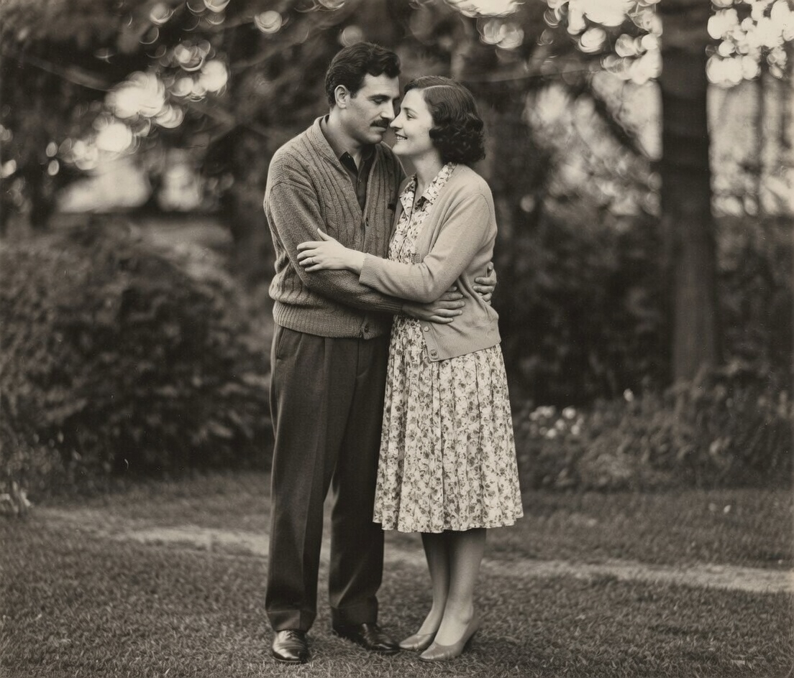

1952
Nascimento em Belo Horizonte, começando a escrever uma trajetória de generosidade.
Lembranças eternas
12 de abril de 1952 — 3 de novembro de 2024

João entrou nos dias de cada pessoa com calma e delicadeza. Sempre dizia que cada história merece espaço para respirar, e por isso reunia a família em mesas longas de domingos, músicas baixas e café fresco feito com carinho.
Sua carreira como engenheiro era apenas uma parte da jornada. Ele era professor dos filhos, companhia dos colegas e ouvinte dos sonhos mais silenciosos. O talento dele era transformar jornadas difíceis em canções de esperança.
Hoje, este memorial costura as lembranças em cores suaves, para que o conforto do olhar dele volte a brilhar em cada lembrança compartilhada.
“Há memórias que abraçam com mais força quando a gente recupera sorrisos guardados no peito.”
Nascimento em Belo Horizonte, começando a escrever uma trajetória de generosidade.
Graduado em Engenharia Civil e primeira viagem com a esposa pelas montanhas de Minas.
Fundação da oficina comunitária de música que iluminou a rua inteira.
Último abraço, mas um legado de ternura que segue vivo em nós.

Em cada canteiro urbano que passou, João deixava mais que edificações: criava espaços para encontros, iluminação suave e bancos onde vizinhos podiam se encontrar como família.
O som do violão ao amanhecer e o aroma do café encorpado eram celebrações silenciosas com os filhos. Ele dizia que música e café eram combustível para manter promessas vivas.


Nas festas de família, João iluminava a sala com luzes artesanais e versos improvisados. Era o ponto de encontro que convidava todos a reviver os melhores capítulos juntos.


